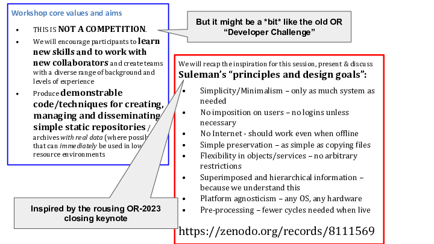
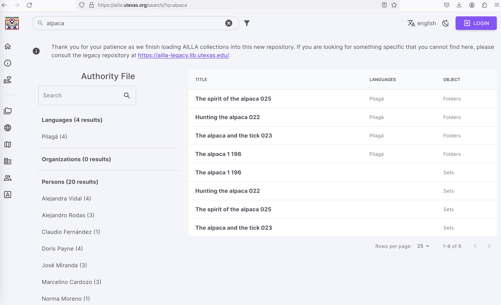
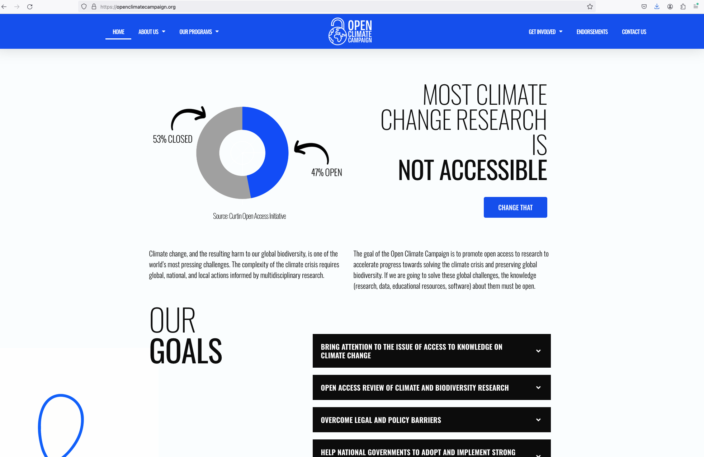

Open Repositories 2024 Trip Report: Göteborg
2024-06-26
This is my summary of The 19th International Conference on Open Repositories, June 3-6th 2024, Göteborg, Sweden.
I paid for air travel to Sweden, via Tokyo, Helsinki and Stockholm and the University of Queensland paid for the conference registration and accommodation for the 4 days of the conference.
I've been going to this series of conferences for a while, starting with the initial meeting in Sydney in 2006 - missed the 2022 one in Denver, but apart from that I've been to all of the face to face meetings. Starting to think about how to mark the 20th episode which will be in Chicago next year.
In this post I'll cover this year's keynotes, some highlights and what I did at the conference, starting with our workshop on the first day.
Our workshop
Last year I had an idea to pick up on some of the themes of the closing keynote from Hussein Suleman who has deep experience implementing repositories and archives. He attended the conference and pointed out issues with complexity and cost (too much), and sustainability (not so much) with the presentations he saw at the conference. I don't think he was very I said:
In response to Suleman's challenges I'd like to propose a stream of work at next year's Open Repositories conference in Sweden.
How about we hold a pre-conference hands-on workshop that challenges repository developers to embrace some of the approaches Suleman is talking about - storing files on disk, zero-install indices of content etc? How simple could you go to radically re-imagine a repo stack?
I'd like to see a mixture of institutional and commercial developers get involved, and to step out of their big fully-featured repository palaces and see what we can get done in a few days over the conference. We'd then have a session at the end of the conference that builds on work by Suleman and others on low-resource-ready repository and archive solutions. There might be token prizes as there are for poster presentations.
Well, Claire Knowles, Kim Shepherd and I proposed a workshop - it was accepted and Kim and I ran it on the Monday with Claire's colleague John Salter.

We had a teaching space at the uni, a short tram ride from the hotel. There were about 15 people in the room for the morning.

The morning was a conversation about what do we mean by "static" website / repository? Conclusion: it means lots of different things depending on what you're trying to achieve. We discussed some of the things Suleman had spoken about - lack of resources for complex tech, poor or no networks and whether it's Ok to have Javascript in static pages. It all depends.
We were very lucky to have Kiflom Michael Kahsay from the Eritrean Research and Documentation Centre at the workshop. He gave us a quick presentation of what repositories mean in the Eritrean context (carefully curated stand-alone instances of DSpace) and talked about how they run an "internet in a box" with teaching materials, as the country is basically not connected to the internet; every time he's got an internet connection he's gathering materials to be taken home for teaching - off local networks and stand-alone machines, or via USB sticks plugged in to smart TVs for home learning.
We not only had projects emerge from the workshop, we had a way to tie them together; "Easy Open" proposed by Patrick Stickler. Patrick wanted to make repository downloads immediately usable and well described with a nice HTML readme in every zip. I (predictably) said "Use RO-Crate" and he said (something like) "No, those weird file names, not easy"[1]. Patrick came up with an idea to wrap any kind of data package with a simple HTML entry point called OPEN.html (in your language of choice) which would contain a useful guide to the data package[2]. Patrick's team, which I joined, helped flesh out this idea into a draft spec and the other teams all aimed to support it in their own designs.
Our aims for the workshop were around building professional networks as much as tackling the issue at hand. The personal feedback we received included the phrase "life changing" from one participant and we had thanks from others for making their conference experience much more valuable that it would otherwise have been. We're happy with the outcome; I think this is an interesting approach to try again at this and other conferences as a way for people to meet, think about bigger issues and maybe progress the Open Repositories agenda (whatever that is, more on that below).
As if by magic, after lunch, 5 teams coalesced out of the workshop, and spent the next few hours exploring different responses to Suleman's call to action. We presented these at the closing plenary in ten minutes - the presentation is up on the conference github organization. Here's my slide from the closing plenary session:

Inspired by Prof Hussein Suleman’s closing keynote at OR2023 “Designing Repositories in Poor Countries” this workshop explored practical implementations of Suleman’s principles and goals. We encouraged developers, metadata specialists and managers to embrace, simple and sustainable approaches to making data safe and available using well established static web publishing techniques with on-demand indexes and discovery interfaces – contrasting with the complexity of current repository stacks which have grown into bloated enterprise software where setup and data migration are very expensive and hosting requirements are substantial.
We explored a range of technologies including those mentioned in the keynote and the participants came up with the following ideas which they’ve been working on and documenting throughout the conference. We’d love to see some of these ideas continue to develop and to show up at OR2025 as poster or dev-track submissions.
Our presentations
I talked about three other things prepared with colleagues at the Language Data Commons of Australia and RO-Crate:
- Crate-O - a drop-in linked data metadata editor for RO-Crate (and other) linked data in repositories and beyond
- Five ways RO-Crate data packages are important for repositories
- A comprehensive, open and sustainable set of principles and tools for low (and high) resource Archival Repositories <-- this is the important one
These are all annotated presentations, with detailed notes. The third of these is the most important - it introduces a set of implementation protocols that we have been developing for Research Data Management; the Protocols for the Implementations of Long-term Archival Repository services (PILARS). https://w3id.org/ldac/pilars
Some other interesting things
Experiential Learning and Technical Debt
Clinton Graham University of Pittsburgh, United States of America
Experimental student projects provide a low-barrier opportunity for research universities to both support student learning and to pilot novel presentations of institutional research and data. This is particularly advantageous when students of a minority community are enabled to tell the stories of the research data of that minority community. The unresolved risk, however, is the ongoing stewardship of this work, as such an experimental or pilot project represents an inherited technical debt after the students have graduated.
This presentation will describe one such student endeavor as a case study. At the University of Pittsburgh, the University Library System and the School of Computing and Information Science partnered to create a query/visualization tool highlighting a distinctive-collections deposit within the University’s institutional repository of transcriptions of a substantial Chinese village gazetteer collection. The presenter will reflect on successes and challenges of this project and will invite conversation on similar technical management of experimental/pilot student projects which highlight institutional repositories’ research and datasets.
This presentation was great - Graham talked about a student built project; as he talked I was thinking, that sounds terribly unsustainable and I was working out how to phrase a pointed question or two. But then he went on to talk about the problems inherent in this approach with sustaining bespoke applications. Given projects in the Repo space, students (and also IT faculty members) are not likely to come up with sustainable solutions; they'll build with the tech they've been learning about and not think about long term concerns. It sounds like a more principled, guided approach is on the cards for future work with student cohorts.
Using Fedora 6 to architect future-proof and easily maintained repositories
Dustin Slater University of Texas at Austin, United States of America
At the University of Texas at Austin Libraries we have several Digital Asset Management Systems (DAMS) performing a variety of functions, most of which were in Islandora 7. With the Drupal 7 end of life we pursued rebuilding each of these platforms, which was complicated and labor-intensive. We sought to find another approach to solving this problem, one which would allow us to both modularize the infrastructure to move away from a monolithic implementation and adopt the Oxford Common File Layout (OCFL) as our storage layer to prevent needing future data migrations. Fedora 6 allowed us to rethink how to solve our DAMS challenges by providing OCFL and an API to access the data. With this as our foundation, we embarked on rebuilding our Archive of the Indigenous Languages of Latin America portal using a selection of open-source technologies. This resulted in a trilingual portal that is attractive, flexible, and sustainable. We are excited to have completed this project during the International Decade of Indigenous Languages and look forward to seeing how communities all over the world will continue to use the content to reclaim their languages.
This presentation included a mention of a presentation I gave last year at OR - about separating storage from display/dissemination and is using a similar pattern with OCFL as a storage layer. The difference is that University of Texas are using Fedora as the API to access the OCFL - this was not an option when we started our work with LDaCA (RRKive) but it may be worth exploring for us going forward. To get technical, one main difference between the approaches is that the RRKive approach follows the RO-Crate specification to store metadata about objects in OCFL while Fedora 6 (as far as I know based on attending a workshop last year) stores many small metadata files - at least one per content file and one per object which can pose additional challenges with file-system limits. I'm not up to date with all the Fedora discussions about this, but I do know that the too-many-little-files problem is being addressed in the next release of OCFL.
One of their projects is and Indigenous Language Archive which is similar (and looks reassuringly similar) to what we're doing at LDaCA.
Here's a search for "alpaca" - which thanks to Moises is the LDaCA mascot 🦙.

Venue
The conference venue was fine - no networking problems, good food.

The hotel is full of stupid hostile designs, lots of strikingly uncomfortable chairs in the lobby, and unusable furniture in the room: had a weird little nook/notch in which to plug in the kettle and a bizarre curved, tall cabinet to house the bar fridge. And the lights! Light switching in hotel rooms can be confusing, but they'd really gone to town on that part - multiple different kinds of switch on the same panel beside the bed, changing shit all over the room - flip this one, push that one until you get it go dark. It never really gets dark though in June, in those parts.
The outside is nice though.

Keynotes
This year's opening & closing keynotes were both delivered by researchers and talked about the Open Access agenda.
Opening Keynote
The opening keynote presentation talked about open access and got into some details about reproducibility
Gustav Nilsonne is associate professor of neuroscience at Karolinska Institutet, Sweden. His work is largely in metascience: assessing and improving the transparency and reproducibility of research. Gustav is a long-standing advocate for open science and is a senior advisor to the Swedish National Data Service.
Nilsonne has been active in efforts to re-form science - he mentioned this article on which he is an author.
- Vicious cycle After three decades of deterioration, more and more experts consider the scholarly journal system fundamentally broken and demand that it be replaced [1]. Most recently, Robert Terry, project manager at the World Health Organization stated at the R&I Days of the EC DG Research and Innovation that ‘The whole concept of a "journal" is kind of dead actually. What we need is a complete rethink', to strong support from the DG Jean-Eric Paquet [2] and reiterated by the Council of the EU [3]. Replacing traditional journals with a more modern solution is not a new idea [4–12], but the lack of progress since the first calls and ideas more than 20 years ago has convinced an increasing number of experts that the time for small tweaks is long gone and a disruptive break is now overdue. https://doi.org/10.1098/rsos.230206
And he quoted this from Richard Poynder who has been reporting on the Open Access movement for ages:
Sunday, January 07, 2024
Signing off After reporting on the open access movement for 20+ years I have reached the conclusion that the movement has failed.
As a result, I shall no longer be writing about open access or updating this blog.
I explain my reasons for reaching the conclusion I have in this Q&A on The Scholarly Kitchen website.
I would like to thank those who wished me well when I announced my decision and I wish all those who continue to advocate for open access the very best.
My challenge to the latter is: please prove me wrong https://poynder.blogspot.com/2024/01/after-reporting-on-open-access-movement.html
This got my friend Richard Jones all fired for his talk: he's tired of all this "OA is dead talk" see the next section about how he gave more nuanced view of how we're going.
This was a not a doom and gloom talk; it was about what Nilsonne and colleagues are doing to make science work better, which also requires work to get scholarly communications out of the clutches of big business. The speaker did note that there is still a lot of work to do with Research Data Repositories; that data has not been completely co-opted by the publishing industry just yet.
Closing keynote
The closing keynote was a call to action on increasing the amount of literature on climate science that's available above the 50% mark where it currently sits.
Dr. Monica Granados has a PhD in ecology from McGill University. While working on her PhD, Monica discovered incentives in academia promote practices that make knowledge less accessible and has since devoted her career to working in the open science space in pursuit of making knowledge more equitable and accessible. She has worked on open knowledge initiatives with Mozilla, PREreview and the Government of Canada. Monica is now an Assistant Director at Creative Commons working on the Open Climate Campaign promoting open access of climate and biodiversity research.
Granados talked about the problem - that research literature is not available and talked about a campaign to change this by various means including a toolkit for the authors of recent articles.

Yes, of course we should do this, though the fact that we still have to mobilise to recruit open access content and we're talking at it at Open Repositories number nineteen might support encourage the view that the Open Access movement has failed.
The talk was all about finding the literature and making it open but the site does mention other outputs which I have highlighted in this quote from the website:
The goal of the Open Climate Campaign is to promote open access to research to accelerate progress towards solving the climate crisis and preserving global biodiversity. If we are going to solve these global challenges, the knowledge (research, data, educational resources, software) about them must be open.
Only 47% of publications available OA is bad enough - the situation is much worse for those other outputs particularly data. This talk was mainly about the publications though and I got the strong impression that that's where the project is focussing its advocacy and tools. There are a few links on the site to resources on Open Data and Open Code but nothing that would move the needle on access to data and code.
There's a tendency on this project, and in lots of other discourse around Open Access to refer to research publications as "research". This habit is an issue in the Open Repositories and Open Access community broadly.
Bibliometrics Research
One of our main Campaign objectives is to conduct an open access review of climate and biodiversity research. We work with bibliometric experts to track the percentage of open vs closed climate science and biodiversity research [publications]. We also use these tools to identify seminal climate and biodiversity research [publications] in order to prioritize our efforts in advocating for that research [publications] to be open. We publish our findings on our homepage and regularly share updates on progress toward 100% open access for climate change research.
Using publications (and the journals in which they are bundled) as a proxy for "research" in general is part of what got us in trouble in the first place with limited access and poor reproducibility. Nilsonne's keynote made it clear "research" is not just about publications and deeper systemic change is needed.
In the context of this conference, it has been understood since day one that "Institutional Repository" actually means "Institutional (Scholarly) Publications Repository" but now there are kinds of repositories so more explicit language would be helpful I think.
All that said, it's still a good idea to recruit more open access publications about climate change.
My fave presentation this year
My pick of the most interesting presentation this time was from someone I've known for a long time (and I have done some work through his company); Richard Jones gave a very polished and clear summary of how Open Access is going in repository land.
Looking up from the weeds: seeing what's next for OA by learning from the past
Richard David Jones Cottage Labs, United Kingdom
This presentation looks at the history of Open Access from the perspective of the author, a software engineer in the sector for nearly 25 years. In that time he has been involved in local, national and international efforts in all aspects of the development of repositories and the infrastructure services that support them. It is about what we’ve actually seen be developed and become reality in that time, and how it connects to the goals and desires of the community. It asks what lessons we can learn from that time, and what that might tell us about the future of OA, and whether it is alive and well or under threat. What is the role that the repository has to play in the coming publishing paradigms which aim to improve global publishing equity (such as Diamond and Overlay Journals) and how can we as a community enable it.
Jones and his colleagues have worked on many of the Open Access infrastructure projects that tie repositories together; things I've seen discussed at the conference for ages but which are not part of my day to day work, so it was great to hear about a bunch of them in one place. He noted that every year someone announces the death or failure of OA but takes a much more nuanced view. He asked if Open Access is succeeding? First thing, it's not a Yes/No question. We got a kind of score-card on what is and is not working.
We're all aware of is that the academic publishing industry has not loosened its hold on the research industry, it's making as much or more money as it was before and it didn't just go away when people started publishing open versions of their articles. This came up in the opening keynote and other discussions as well. This thing called "Gold Open Access" where research teams pay up-front for publishers to organize peer review, editing, formatting and distribution always seemed odd to me - Jones showed that it has not hurt profitability much but has shifted the costs around in a way that's probably unfair. The big issue here is that the publishers still have their journals which (I believe) they can rent out even if the content is free and the journals are integral to funding and staffing in institutions.
He noted that the Research data is an area where Big Publishing has not yet completely locked things up, a point which I think was also made by the opening keynote presenter; this is something to think about for the next twenty years of the conference; more emphasis on data. But data can't always be Open so how does that sit with an Open Repositories conference? Which brings us to the future.
Next year?
Next year in Chicago will be the 20th of these conferences - I'll probably attend. Thinking about some stuff to do:
- Another workshop along the lines of the one we ran this year? I think so, but it will be interesting to see the feedback from participants and the conference committee.
- A reflection on 20 years of Open Repositories, from a very different perspective than Richard's certainly.
- Maybe suggest a panel discussion on the future of the conference and even the name? Is it meant to be a conference about Publications Repositories or is it more than that? (We know it's much more than that)
RO-Crate was created five years ago merging two approaches; DataCrate and Research Objects. In DataCrate the 'easy to open' HTML file was called CATALOG.html (and there was CATALOG.jsonld) - but we changed this to avoid having name collisions with the content being packaged, at the cost of making it much more obscure. Easy Open is a potential antidote to this, and can be added to RO-Crates. EasyCrate? ↩︎
This idea is 100% aligned with RO-Crate but experience is showing that this aspect of the spec is under-valued by implementers, and many existing crate download services don't do this well at all in my opinion ↩︎